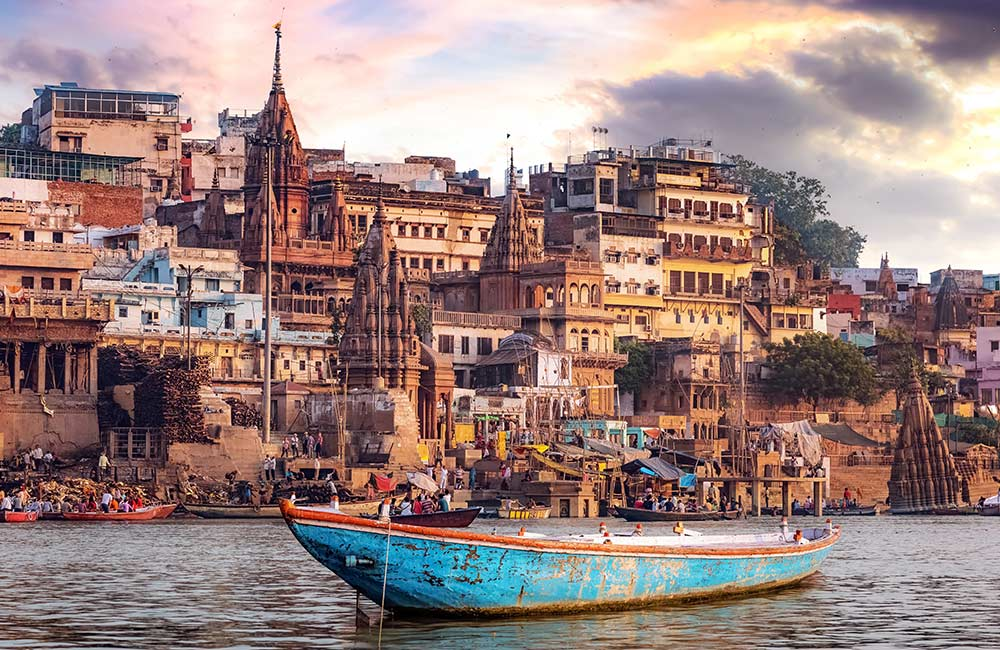

Varanasi

Situated on the banks of River Ganga in Uttar Pradesh, the holy city of Varanasi or Banaras is counted among the most sacred places in India.
The city is known for some of the most revered temples and Ghats in the country and is frequented by devotees and tourists from across the world.
Varanasi, one of the oldest cities in the world, is also popular as the home of Lord Shiva and Goddess Parvati.
It is believed that taking a dip in the Ganges can wash away all your sins.
The bustling city is popular for its museums, authentic Banarasi food, Banarasi sarees and handicrafts as well.
Best Time to Visit: November to February
Ideal Duration: 2-3 days
Places to Visit in Varanasi: Shri Kashi Vishwanath Temple, Dashashwamedh Ghat, Manikarnika Ghat, Ramnagar Fort, Shri Durga Temple, Kaal Bhairav Temple, Sarnath Museum, Sankatmochan Temple.
Things to Do in Varanasi: Seeking blessings at temples, enjoying delectable Banarasi food and sweetmeats, shopping for Banarasi silk sarees at Thateri Bazaar, Vishwanath Gali and Temple Bazaar
How to Reach:-
Nearest Airport: Varanasi's Lal Bahadur Shastri International Airport
Nearest Railway Station: Varanasi Junction.